HƯỚNG DẪN CHỨC NĂNG LƯU TRỮ TRỰC TUYẾN ECUSDRIVE
Căn cứ khoản 5 Điều 3 Thông tư 38/2015/TT-BTC ngày 25/03/2015 của Bộ Tài chính quy định: Người khai hải quan có trách nhiệm lưu trữ hồ sơ theo quy định tại khoản 2 Điều này, sổ sách, chứng từ kế toán trong thời hạn theo quy định của pháp luật về kế toán. Ngoài ra, người khai hải quan phải lưu trữ các chứng từ khác liên quan đến hàng hóa xuất khẩu, nhập khẩu trong thời hạn 5 năm, bao gồm chứng từ vận tải đối với hàng hóa xuất khẩu, phiếu đóng gói, tài liệu kỹ thuật, chứng từ, tài liệu liên quan đến định mức thực tế để gia công, sản xuất sản phẩm xuất khẩu. Do đó, doanh nghiệp có thể áp dụng hình thức lưu trữ hồ sơ giấy hoặc lưu trữ hồ sơ dạng điện tử trên máy tính, máy chủ hoặc USB, nhưng vấn đề là trong thời gian dài như vậy làm sao tránh được tính trạng rách, cháy, mất khi lưu hồ sơ giấy hoặc hỏng, mất khi lưu dạng điện tử.
Hiện nay, công ty Thái Sơn đã cung cấp dịch vụ lưu trữ dữ liệu ECUSDrive cho phép doanh nghiệp lưu trữ dữ liệu trên DC (Data Center), được bảo đảm an toàn, bảo mật dữ liệu.
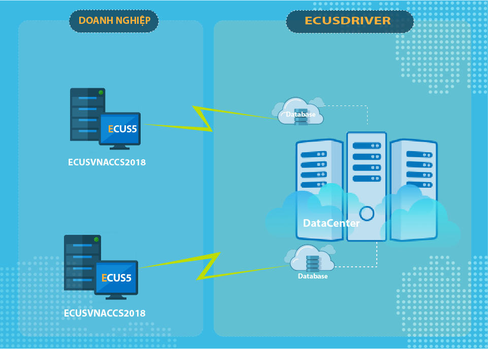
Hệ thống sẽ cung cấp cho các cá nhân, doanh nghiệp xuất nhập khẩu, công ty khai thuê:Sau đây là phần hướng dẫn chi tiết cách đăng ký và sử dụng dịch vụ.
Trước khi sử dụng dịch vụ, bạn cần đăng ký một tài khoản sử dụng bằng cách vào menu Tiện ích > Dịch vụ lưu trữ dữ liệu ECUSDRIVE
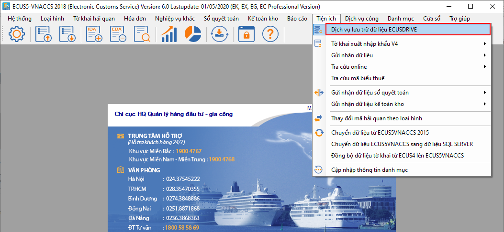
Bạn nhấn vào Đăng ký tài khoản tại cửa sổ đăng nhập mới hiện ra: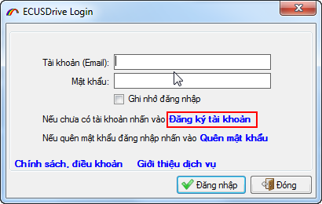
Màn hình chức năng đăng ký tài khoản hiện ra như sau: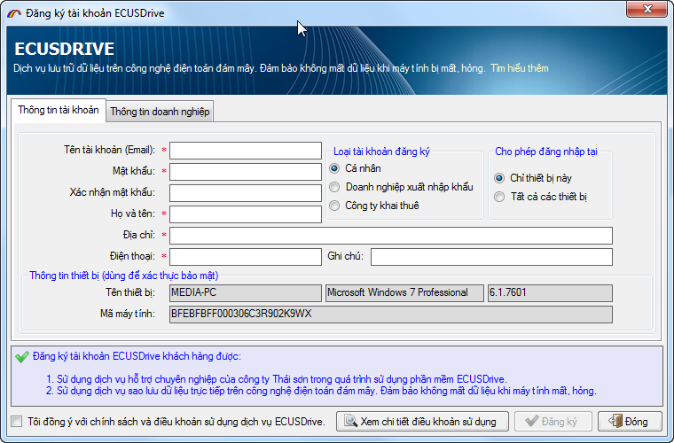
Bạn nhập đầy đủ các thông cho tài khoản, địa chỉ email chính là tài khoản để đăng nhập vào hệ thống sau khi bạn đăng ký thành công, ví dụ: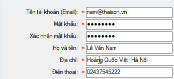
Chọn loại tài khoản đăng ký phù hợp như: Cá nhân, doanh nghiệp xuất nhập khẩu hoặc công ty khai thuê.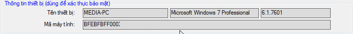
Cấu hình máy tính này sẽ được hệ thống dịch vụ lưu trữ dữ liệu công ty Thái Sơn lưu trữ, nếu máy tính này bị hư hỏng hoặc muốn thay đổi cấu hình, thiết lập đăng nhập, bạn cần phải làm công văn để phía công ty Thái Sơn điều chỉnh. Do đó, lựa chọn này mang tính bảo mật dữ liệu cao, tránh được trường hợp truy cập trái phép.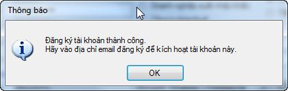
Bạn truy cập vào địa chỉ email đã đăng ký tài khoản để kích hoạt tài khoản: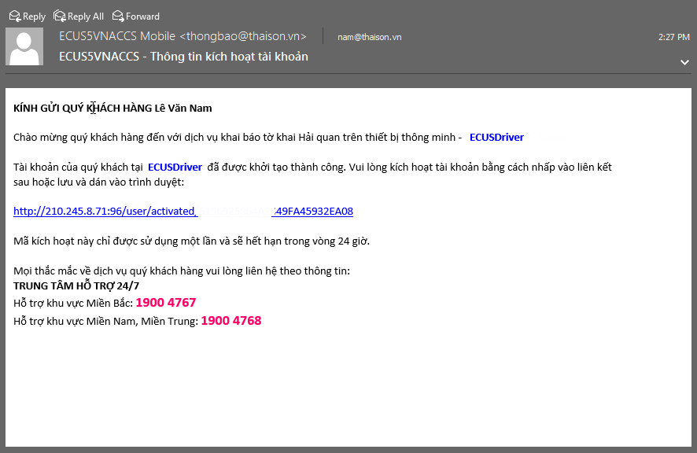
Sau khi tài khoản được kích hoạt, bạn tiến hành đăng nhập vào hệ thống dịch vụ lưu trữ, thành công giao diện chức năng hiện ra như sau:
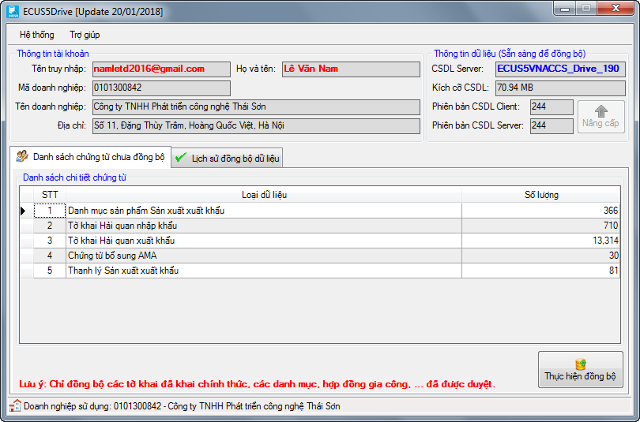
Với lần đầu đăng nhập sử dụng, phần mềm sẽ hiện ra bảng cấu hình đồng bộ để bạn thiết lập:
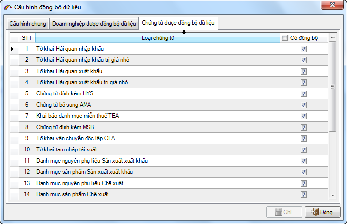
Tại tab Cấu hình chung: Bạn sẽ thấy danh sách các máy tính đang sử dụng dịch vụ đăng nhập bằng tài khoản mà bạn cũng đang đăng nhập, bạn có thể thiết lập để máy tính là máy đồng bộ chính hoặc dự phòng: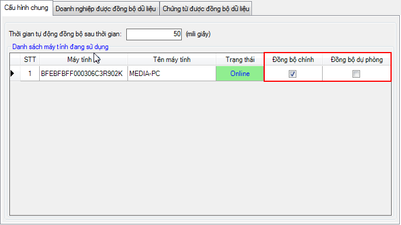
Tại tab Doanh nghiệp được đồng bộ: Đây là danh sách doanh nghiệp bạn đang khai báo trên máy tính này, muốn đồng bộ dữ liệu cho doanh nghiệp nào thì bạn đánh dấu tích chọn: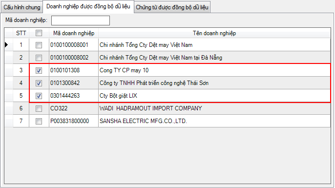
Tại tab Chứng từ được đồng bộ: Đây là danh sách tất cả các loại chứng từ mà bạn khai báo trên phần mềm ECUS5VNACCS như Tờ khai nhập khẩu, xuất khẩu, Hợp đồng gia công, Danh mục nguyên liệu, Sản phẩm, Thiết bị…bạn chỉ việc đánh dấu chọn vào mục cần đồng bộ, mặc định phần mềm đã đánh dấu chọn tất cả.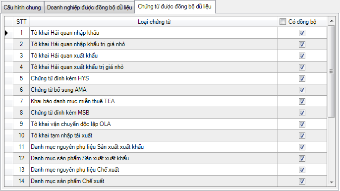
Cuối cùng bạn nhấn vào nút Ghi để lưu lại thông tin cấu hình, phần mềm sẽ thống kê danh sách số lượng chứng từ theo cấu hình đã chọn: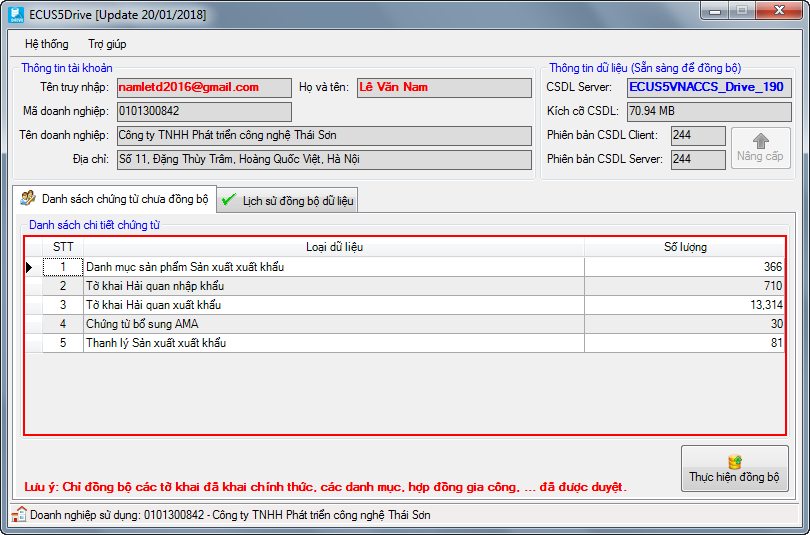
Nhấn vào nút Thực hiện đồng bộ để bắt đầu, thời gian thực hiện nhanh hay chậm phụ thuộc vào dữ liệu của doanh nghiệp bạn.Bạn có thể xem lại lịch sử động bộ, hoặc tiến trình đồng bộ diễn ra tại tab Lịch sử đồng bộ dữ liệu:
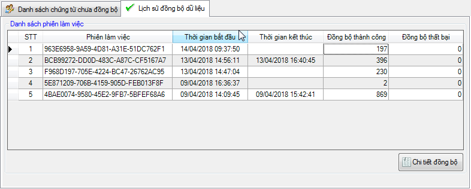
Nhấn vào Chi tiết đồng bộ để xem chi tiết lần đồng bộ: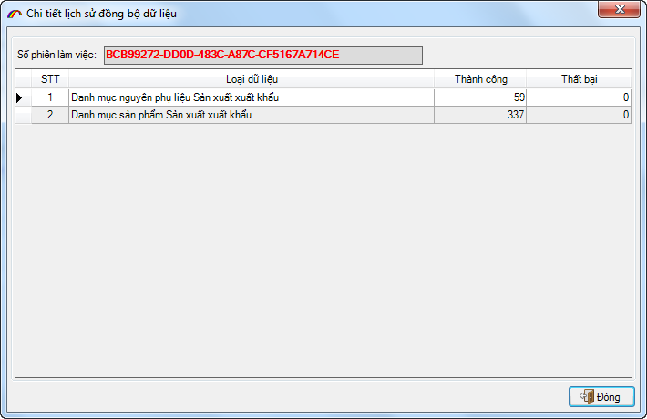
Bạn có thể chỉnh lại cấu hình đồng bộ bằng cách vào menu Hệ thống > Cấu hình dữ liệu.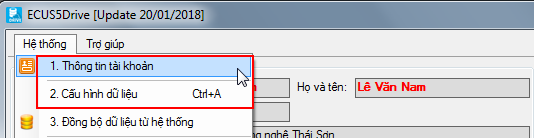
Trong trường hợp bị mất dữ liệu trên máy tính đang sử dụng, bạn muốn khôi phục lại dữ liệu đã đồng bộ lên hệ thống lưu trữ ECUDrive thì bạn thực hiện như sau: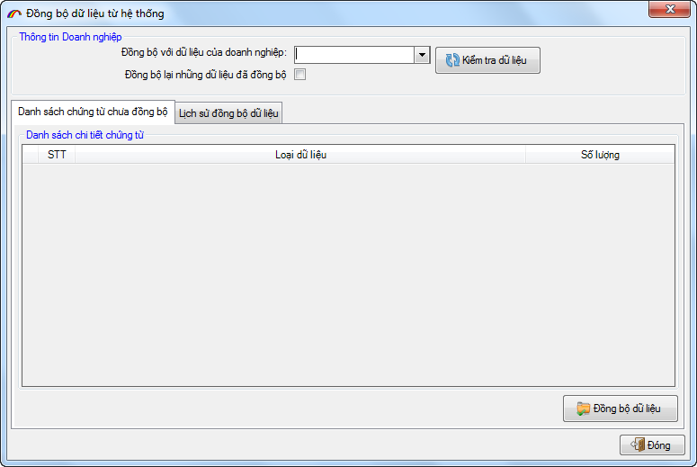
Bước 3: Tiến hành đồng bộ dữ liệu về máy tính, bạn chọn mã số thuế của doanh nghiệp cần đồng bộ sau đó nhấn vào nút Kiểm tra dữ liệu, phần mềm sẽ kết nối hệ thống và hiển thị danh sách các dữ liệu của doanh nghiệp mà bạn vừa chọn: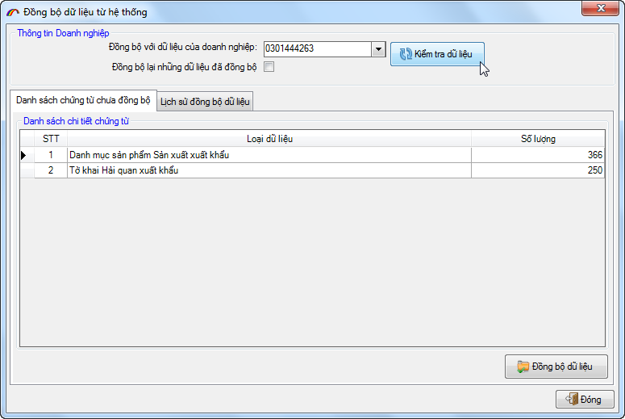
Cuối cùng bạn nhấn vào nút Đồng bộ dữ liệu để bắt đầu, tiến trình thực hiện nhanh hay chậm phụ thuộc vào độ lớn dữ liệu của doanh nghiệp bạn chọn.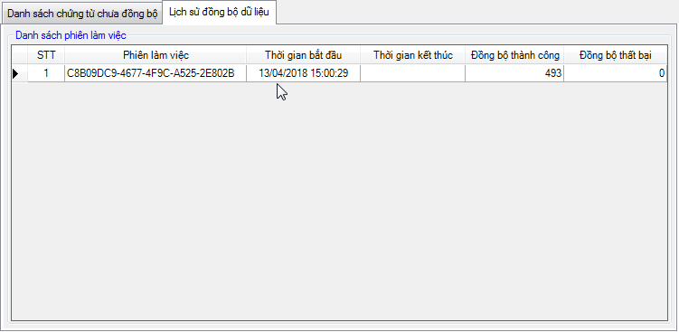